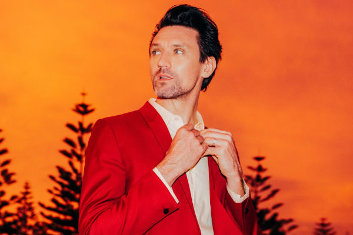

| Paul Dempsey announces brand new album 'Strange Loop' 1 April 2016 |
|  |
Almost seven years since the release of ‘Everything Is True’, Paul Dempsey has announced his second solo album ‘Strange Loop’, referencing the similarly titled book by Douglas Hofstadter. While seven years sounds like a long stretch between works, that period saw a new album from sonic stalwarts Something For Kate, multiple tours (including a 20th anniversary), Shotgun Karaoke, and solo performances in events like MyTunes - all helping to form the ideas and the experience of ‘Strange Loop’. So far, we’ve only heard a few snippets of the new record, including the first single Morningless, an electrified and eclectic song that sits on a different sonic palate from his first album. Not one for sitting still in one place, it sounds like Dempsey has showcased his knack for musical exploration, successfully pushing his boundaries once more. 'Strange Loop' will hit the shelves on 13 May 2016 through EMI Music. |